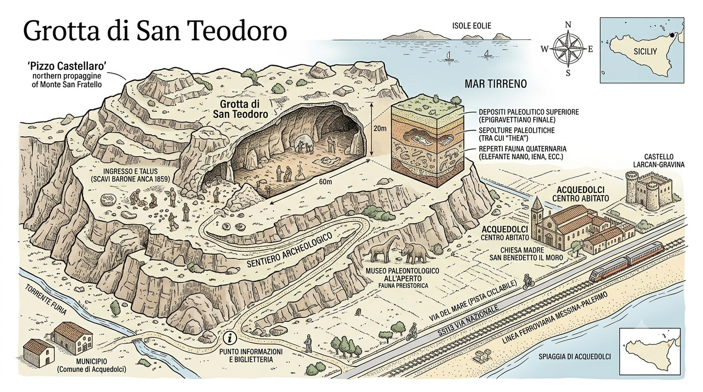
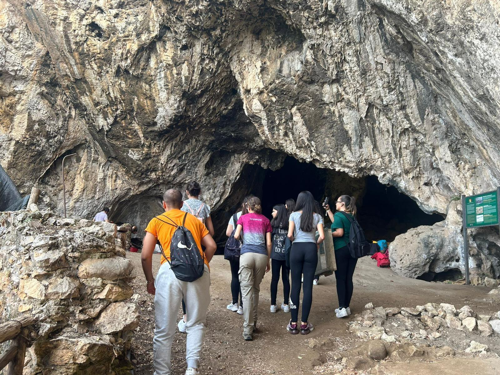
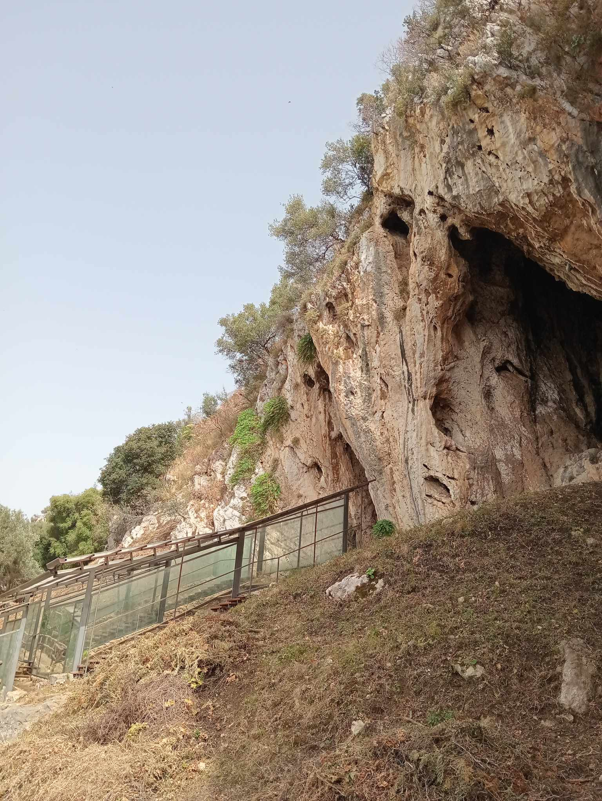

Istituto Comprensivo Acquedolci
Memorie del Territorio

Acquedolci (ME)
Scheda del luogo
Il luogo

Su un'alta parete di roccia calcarea — il Pizzo Castellaro, alle pendici del monte di San Fratello — si apre una grotta enorme, scavata dall'acqua milioni di anni fa. È la Grotta di San Teodoro, uno dei siti preistorici più importanti d'Italia. Al suo interno gli archeologi hanno trovato le ossa di animali ormai estinti e, soprattutto, le tracce dell'uomo preistorico.
La scoperta più emozionante ha un nome: Thea. È lo scheletro di una donna vissuta circa 10.000 anni fa, alta 164 cm e morta intorno ai 30 anni. La sua tomba era cosparsa di ocra rossa e attorno al cranio sono stati trovati dodici denti di cervo forati: una collana. Oggi è considerata la «prima donna di Sicilia» e i suoi resti sono custoditi al Museo Gemmellaro di Palermo.
E il nome «San Teodoro»? Lo diedero dei monaci Basiliani: intorno all'anno Mille, in fuga dall'Oriente durante le persecuzioni contro le immagini sacre (l'iconoclastia), trovarono rifugio proprio in questa grotta e la dedicarono al santo militare Teodoro. Un luogo che, in epoche lontanissime, è stato casa, tomba e rifugio.
Thea portava una collana di dodici denti di cervo e la sua tomba era cosparsa di ocra rossa. Visse circa 10.000 anni fa: è la «prima donna di Sicilia».
La Grotta di San Teodoro è ancora oggi studiata come uno dei siti preistorici più importanti d'Italia.
Per approfondire → Pro Loco di AcquedolciImmagini


Foto 2: Episcopello, Wikimedia Commons, licenza CC BY-SA 4.0
Storia del territorio